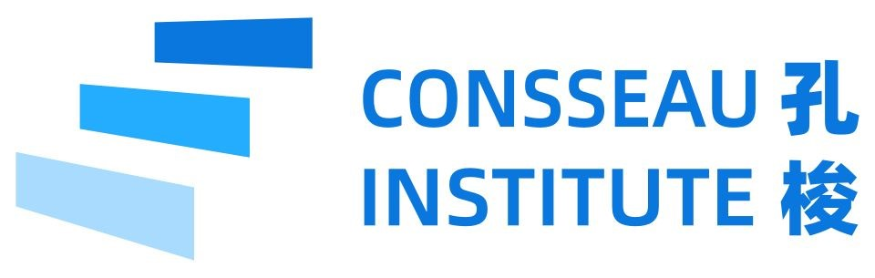

本机生成，试听确认后再发布。Kokoro Heart 美式神经网络语音，所有学生使用同一音色；本机生成，无按字数计费。
此工具需要在教练的Mac上运行。启动 tools/teacher_server.py 后，打开 http://127.0.0.1:8766/teacher 。GitHub网页本身不能生成音频。
按句子自动处理语调，段落间增加停顿。合成语音不能保证演讲级的重音和情绪，建议教师试听后决定是否分享。
发布后，音频及标题会在公开学生页面和GitHub仓库中可见。请先删去姓名全称、联系方式等不想公开的内容。确认过内容后再发布。